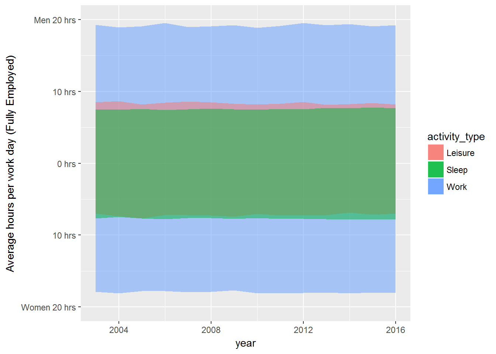

Anscombe’s Quartet
Anscombe quartet emphasizes the need to move beyond basic numerical summaries of your data. The anscombe dataset has four sets of x and y variables with very similar summaries, but distinct visual patterns
Prep the data
anscombe## x1 x2 x3 x4 y1 y2 y3 y4
## 1 10 10 10 8 8.04 9.14 7.46 6.58
## 2 8 8 8 8 6.95 8.14 6.77 5.76
## 3 13 13 13 8 7.58 8.74 12.74 7.71
## 4 9 9 9 8 8.81 8.77 7.11 8.84
## 5 11 11 11 8 8.33 9.26 7.81 8.47
## 6 14 14 14 8 9.96 8.10 8.84 7.04
## 7 6 6 6 8 7.24 6.13 6.08 5.25
## 8 4 4 4 19 4.26 3.10 5.39 12.50
## 9 12 12 12 8 10.84 9.13 8.15 5.56
## 10 7 7 7 8 4.82 7.26 6.42 7.91
## 11 5 5 5 8 5.68 4.74 5.73 6.89First we’ll use tidyr to reshape the anscombe dataset to make it easier to work with.
library(tidyr)##
## Attaching package: 'tidyr'## The following object is masked from 'package:magrittr':
##
## extracttidy_anscombe <- anscombe %>%
mutate(id = row_number()) %>%
gather(key = key, value = value, everything(), -id)
tidy_anscombe## id key value
## 1 1 x1 10.00
## 2 2 x1 8.00
## 3 3 x1 13.00
## 4 4 x1 9.00
## 5 5 x1 11.00
## 6 6 x1 14.00
## 7 7 x1 6.00
## 8 8 x1 4.00
## 9 9 x1 12.00
## 10 10 x1 7.00
## 11 11 x1 5.00
## 12 1 x2 10.00
## 13 2 x2 8.00
## 14 3 x2 13.00
## 15 4 x2 9.00
## 16 5 x2 11.00
## 17 6 x2 14.00
## 18 7 x2 6.00
## 19 8 x2 4.00
## 20 9 x2 12.00
## 21 10 x2 7.00
## 22 11 x2 5.00
## 23 1 x3 10.00
## 24 2 x3 8.00
## 25 3 x3 13.00
## 26 4 x3 9.00
## 27 5 x3 11.00
## 28 6 x3 14.00
## 29 7 x3 6.00
## 30 8 x3 4.00
## 31 9 x3 12.00
## 32 10 x3 7.00
## 33 11 x3 5.00
## 34 1 x4 8.00
## 35 2 x4 8.00
## 36 3 x4 8.00
## 37 4 x4 8.00
## 38 5 x4 8.00
## 39 6 x4 8.00
## 40 7 x4 8.00
## 41 8 x4 19.00
## 42 9 x4 8.00
## 43 10 x4 8.00
## 44 11 x4 8.00
## 45 1 y1 8.04
## 46 2 y1 6.95
## 47 3 y1 7.58
## 48 4 y1 8.81
## 49 5 y1 8.33
## 50 6 y1 9.96
## 51 7 y1 7.24
## 52 8 y1 4.26
## 53 9 y1 10.84
## 54 10 y1 4.82
## 55 11 y1 5.68
## 56 1 y2 9.14
## 57 2 y2 8.14
## 58 3 y2 8.74
## 59 4 y2 8.77
## 60 5 y2 9.26
## 61 6 y2 8.10
## 62 7 y2 6.13
## 63 8 y2 3.10
## 64 9 y2 9.13
## 65 10 y2 7.26
## 66 11 y2 4.74
## 67 1 y3 7.46
## 68 2 y3 6.77
## 69 3 y3 12.74
## 70 4 y3 7.11
## 71 5 y3 7.81
## 72 6 y3 8.84
## 73 7 y3 6.08
## 74 8 y3 5.39
## 75 9 y3 8.15
## 76 10 y3 6.42
## 77 11 y3 5.73
## 78 1 y4 6.58
## 79 2 y4 5.76
## 80 3 y4 7.71
## 81 4 y4 8.84
## 82 5 y4 8.47
## 83 6 y4 7.04
## 84 7 y4 5.25
## 85 8 y4 12.50
## 86 9 y4 5.56
## 87 10 y4 7.91
## 88 11 y4 6.89tidy_anscombe <- tidy_anscombe %>%
separate(key, c("x_or_y", "series"), 1)
tidy_anscombe## id x_or_y series value
## 1 1 x 1 10.00
## 2 2 x 1 8.00
## 3 3 x 1 13.00
## 4 4 x 1 9.00
## 5 5 x 1 11.00
## 6 6 x 1 14.00
## 7 7 x 1 6.00
## 8 8 x 1 4.00
## 9 9 x 1 12.00
## 10 10 x 1 7.00
## 11 11 x 1 5.00
## 12 1 x 2 10.00
## 13 2 x 2 8.00
## 14 3 x 2 13.00
## 15 4 x 2 9.00
## 16 5 x 2 11.00
## 17 6 x 2 14.00
## 18 7 x 2 6.00
## 19 8 x 2 4.00
## 20 9 x 2 12.00
## 21 10 x 2 7.00
## 22 11 x 2 5.00
## 23 1 x 3 10.00
## 24 2 x 3 8.00
## 25 3 x 3 13.00
## 26 4 x 3 9.00
## 27 5 x 3 11.00
## 28 6 x 3 14.00
## 29 7 x 3 6.00
## 30 8 x 3 4.00
## 31 9 x 3 12.00
## 32 10 x 3 7.00
## 33 11 x 3 5.00
## 34 1 x 4 8.00
## 35 2 x 4 8.00
## 36 3 x 4 8.00
## 37 4 x 4 8.00
## 38 5 x 4 8.00
## 39 6 x 4 8.00
## 40 7 x 4 8.00
## 41 8 x 4 19.00
## 42 9 x 4 8.00
## 43 10 x 4 8.00
## 44 11 x 4 8.00
## 45 1 y 1 8.04
## 46 2 y 1 6.95
## 47 3 y 1 7.58
## 48 4 y 1 8.81
## 49 5 y 1 8.33
## 50 6 y 1 9.96
## 51 7 y 1 7.24
## 52 8 y 1 4.26
## 53 9 y 1 10.84
## 54 10 y 1 4.82
## 55 11 y 1 5.68
## 56 1 y 2 9.14
## 57 2 y 2 8.14
## 58 3 y 2 8.74
## 59 4 y 2 8.77
## 60 5 y 2 9.26
## 61 6 y 2 8.10
## 62 7 y 2 6.13
## 63 8 y 2 3.10
## 64 9 y 2 9.13
## 65 10 y 2 7.26
## 66 11 y 2 4.74
## 67 1 y 3 7.46
## 68 2 y 3 6.77
## 69 3 y 3 12.74
## 70 4 y 3 7.11
## 71 5 y 3 7.81
## 72 6 y 3 8.84
## 73 7 y 3 6.08
## 74 8 y 3 5.39
## 75 9 y 3 8.15
## 76 10 y 3 6.42
## 77 11 y 3 5.73
## 78 1 y 4 6.58
## 79 2 y 4 5.76
## 80 3 y 4 7.71
## 81 4 y 4 8.84
## 82 5 y 4 8.47
## 83 6 y 4 7.04
## 84 7 y 4 5.25
## 85 8 y 4 12.50
## 86 9 y 4 5.56
## 87 10 y 4 7.91
## 88 11 y 4 6.89tidy_anscombe <- tidy_anscombe %>%
spread(x_or_y, value)
tidy_anscombe## id series x y
## 1 1 1 10 8.04
## 2 1 2 10 9.14
## 3 1 3 10 7.46
## 4 1 4 8 6.58
## 5 2 1 8 6.95
## 6 2 2 8 8.14
## 7 2 3 8 6.77
## 8 2 4 8 5.76
## 9 3 1 13 7.58
## 10 3 2 13 8.74
## 11 3 3 13 12.74
## 12 3 4 8 7.71
## 13 4 1 9 8.81
## 14 4 2 9 8.77
## 15 4 3 9 7.11
## 16 4 4 8 8.84
## 17 5 1 11 8.33
## 18 5 2 11 9.26
## 19 5 3 11 7.81
## 20 5 4 8 8.47
## 21 6 1 14 9.96
## 22 6 2 14 8.10
## 23 6 3 14 8.84
## 24 6 4 8 7.04
## 25 7 1 6 7.24
## 26 7 2 6 6.13
## 27 7 3 6 6.08
## 28 7 4 8 5.25
## 29 8 1 4 4.26
## 30 8 2 4 3.10
## 31 8 3 4 5.39
## 32 8 4 19 12.50
## 33 9 1 12 10.84
## 34 9 2 12 9.13
## 35 9 3 12 8.15
## 36 9 4 8 5.56
## 37 10 1 7 4.82
## 38 10 2 7 7.26
## 39 10 3 7 6.42
## 40 10 4 8 7.91
## 41 11 1 5 5.68
## 42 11 2 5 4.74
## 43 11 3 5 5.73
## 44 11 4 8 6.89Numeric summary
tidy_anscombe %>%
group_by(series) %>%
summarise(
mean_x = mean(x),
mean_y = mean(y),
sd_x = sd(x),
sd_y = sd(y),
cor = cor(x, y)
)## # A tibble: 4 × 6
## series mean_x mean_y sd_x sd_y cor
## <chr> <dbl> <dbl> <dbl> <dbl> <dbl>
## 1 1 9 7.500909 3.316625 2.031568 0.8164205
## 2 2 9 7.500909 3.316625 2.031657 0.8162365
## 3 3 9 7.500000 3.316625 2.030424 0.8162867
## 4 4 9 7.500909 3.316625 2.030579 0.8165214Visual summary
While the visual summaries suggest very similar datasets, the visual summaries help identify the differences:
library(ggplot2)
tidy_anscombe %>%
ggplot(aes(x, y)) +
geom_point() +
facet_wrap(~ series) +
coord_fixed()
The Datasaurus Dozen
The Datasaurus Dozen is a set of series, like the Anscombe’s quartet with similar numerical summaries and radically different visual summaries. See a great discussion of this dataset by the creators, Justin Matejka and George Fitzmaurice here
Download the data here and move the DatasaurusDozen.tsv file into your data folder.
datasaurus <- read_tsv("data/DatasaurusDozen.tsv")## Parsed with column specification:
## cols(
## dataset = col_character(),
## x = col_double(),
## y = col_double()
## )datasaurus %>%
group_by(dataset) %>%
summarise(
mean_x = mean(x),
mean_y = mean(y),
sd_x = sd(x),
sd_y = sd(y),
cor = cor(x, y)
)## # A tibble: 13 × 6
## dataset mean_x mean_y sd_x sd_y cor
## <chr> <dbl> <dbl> <dbl> <dbl> <dbl>
## 1 away 54.26610 47.83472 16.76982 26.93974 -0.06412835
## 2 bullseye 54.26873 47.83082 16.76924 26.93573 -0.06858639
## 3 circle 54.26732 47.83772 16.76001 26.93004 -0.06834336
## 4 dino 54.26327 47.83225 16.76514 26.93540 -0.06447185
## 5 dots 54.26030 47.83983 16.76774 26.93019 -0.06034144
## 6 h_lines 54.26144 47.83025 16.76590 26.93988 -0.06171484
## 7 high_lines 54.26881 47.83545 16.76670 26.94000 -0.06850422
## 8 slant_down 54.26785 47.83590 16.76676 26.93610 -0.06897974
## 9 slant_up 54.26588 47.83150 16.76885 26.93861 -0.06860921
## 10 star 54.26734 47.83955 16.76896 26.93027 -0.06296110
## 11 v_lines 54.26993 47.83699 16.76996 26.93768 -0.06944557
## 12 wide_lines 54.26692 47.83160 16.77000 26.93790 -0.06657523
## 13 x_shape 54.26015 47.83972 16.76996 26.93000 -0.06558334Visual summaries
datasaurus %>%
ggplot(aes(x, y)) +
geom_point() +
facet_wrap(~ dataset, ncol = 6) +
coord_fixed()